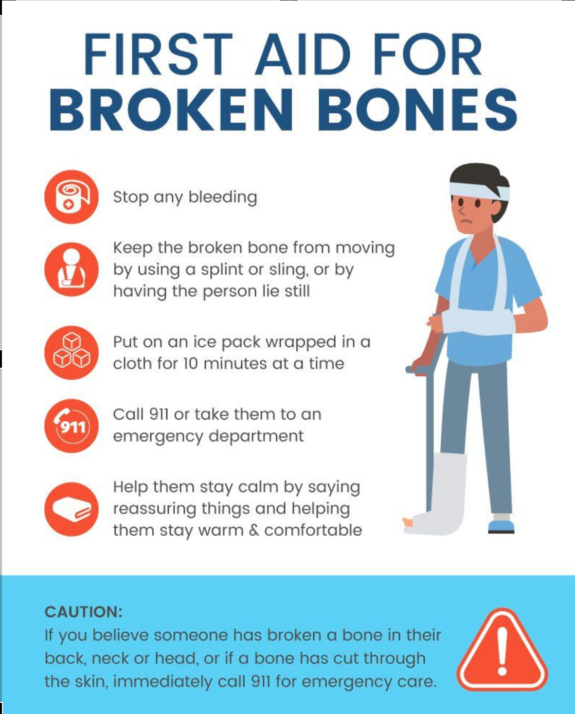

Treatment of broken bone wounds
- Treatment of a broken bone wound (fixation) is known as splint bandaging. Fixation is done by applying two splints comprising of wood lined with thin cloth/sponge. The splints, each two centimeter in length are meant to flank the fracture location, which are then bound with a rope, and tightened to support the broken body part and prevent it from suspending.
- Treating a broken neck is by propping up the neck to prevent any movement, whether left and right, to and fro, as well as turning around.
- A broken back does not need first aid, but needs special aid from competent persons. What should be exercised is to make victim remain in a lying down position, and to make use of a flat and hard palanquin when transferring the victim to a different location.
- When treating a victim with a broken collarbone, no splints are needed, only a shoulder binder to retain its position and prevent the victim from stooping.
- In the case of an open broken bone, first step is to cover the wound, and thereafter conduct a fixation against the broken bone.
Rcognize Wound
'A broken bone wound refers to a wound which occurs on a bone, in the form of cracking, breaking or sticking out of the body.
Broken bones are injuries most common during earthquakes.
The cause of a broken bone is for instance being struck by building debris, trampled on, getting squeezed.
Types of broken bone wounds
• Fractured bone: a bone experiences trauma/impact it may cause the bone to crack, but not break apart.
• Closed broken bone: a bone breaks, but is still inside the body.
• Open broken bone: a bone breaks and sticks out through the skin.
Symptoms of broken bone wounds
• Black and blue
• Swollen
• Very painful when touched or moved
• Change in form
• Broken neck bone can be noticed when there are wounds on both head and neck
• Broken backbone can be noticed when there is a difference in the length of the legs
• Broken rib-bone is followed by breathing difficulties
Principles of first aid against broken bone wounds
The first aid principle to address a broken bone wound is through the fixation to rest/minimize activity of the two joints that flank the broken bone. This is necessary to prevent friction of the broken bone. Friction of a broken bone can aggravate the wound.